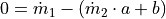
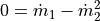
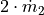
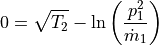
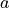
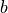
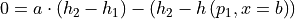

User defined equations¶
User defined functions provide a powerful tool to the user as they enable
the definition of generic and individual equations that can be applied to your
TESPy model. In order to implement this functionality in your model you will
use the tespy.tools.helpers.UserDefinedEquation. The API
documentation provides you with an interesting example application, too.
Getting started¶
For an easy start, let’s consider two different streams. The mass flow of both
streams should be coupled within the model. There is already a possibility
covering simple relations, i.e. applying value referencing with the
tespy.connections.connection.Ref class. This class allows to
formulate simple linear relations:

Instead of this simple application, other relations could be useful. For example, the mass flow of our first stream should be quadratic to the mass flow of the second stream.

In order to apply this relation, we need to import the
tespy.tools.helpers.UserDefinedEquation class into our model an
create an instance with the respective data. First, we set up the TESPy model.
from tespy.networks import Network
from tespy.components import Sink, Source
from tespy.connections import Connection
from tespy.tools.helpers import UserDefinedEquation
fluids = ['water']
nw = Network(fluids=fluids)
nw.set_attr(p_unit='bar', T_unit='C', h_unit='kJ / kg')
so1 = Source('source 1')
so2 = Source('source 2')
si1 = Sink('sink 1')
si2 = Sink('sink 2')
c1 = Connection(so1, 'out1', si1, 'in1')
c2 = Connection(so2, 'out1', si2, 'in1')
nw.add_conns(c1, c2)
c1.set_attr(fluid={'water': 1}, p=1, T=50)
c2.set_attr(fluid={'water': 1}, p=5, T=250, v=4)
In the model both streams are well defined regarding pressure, enthalpy and
fluid composition. The second stream’s mass flow is defined through
specification of the volumetric flow, we are missing the mass flow of the
connection c1. As described, its value should be quadratic to the
(still unknown) mass flow of c2. First, we now need to define the
equation in a function which returns the residual value of the equation.
def my_ude(self):
return self.conns[0].m.val_SI - self.conns[1].m.val_SI ** 2
Note
The function must only take one parameter, i.e. the UserDefinedEquation
class instance. The name of the parameter is arbitrary. We will use
self in this example. It serves to access some important parameters
of the equation:
connections required in the equation
Jacobian matrix to place the partial derivatives
automatic numerical derivatives
other (external) parameters (e.g. the CharLine in the API docs example of
tespy.tools.helpers.UserDefinedEquation)
Note
It is only possible to use the SI-values of the connection variables as these values are updated in every iteration. The values in the network’s specified unit system are only updated after a simulation.
The second step is to define the derivatives with respect to all primary
variables of the network, i.e. mass flow, pressure, enthalpy and fluid
composition of every connection. The derivatives have to be passed to the
Jacobian. In order to do this, we create a function that updates the values
inside the Jacobian of the UserDefinedEquation and returns it:
self.jacobianis a dictionary containing numpy arrays for every connection required by theUserDefinedEquation.derivatives to mass flow are placed in the first element of the numpy array (index 0)
derivatives to pressure are placed in the second element of the numpy array (index 1)
derivatives to enthalpy are placed in the third element of the numpy array (index 2)
derivatives to fluid composition are placed in the remaining elements beginning at the fourth element of the numpy array (indices 3:)
If we calculate the derivatives of our equation, it is easy to find, that only derivatives to mass flow are not zero.
The derivative to mass flow of connection
c1is equal to
The derivative to mass flow of connection
c2is equal to
.
def my_ude_deriv(self):
self.jacobian[self.conns[0]][0] = 1
self.jacobian[self.conns[1]][0] = 2 * self.conns[1].m.val_SI
return self.jacobian
Now we can create our instance of the UserDefinedEquation and add it to
the network. The class requires four mandatory arguments to be passed:
labelof type String.funcwhich is the function holding the equation to be applied.derivwhich is the function holding the calculation of the Jacobian.connswhich is a list of the connections required by the equation. The order of the connections specified in the list is equal to the accessing order in the equation and derivative calculation.params(optional keyword argument) which is a dictionary holding additional data required in the equation or derivative calculation.
ude = UserDefinedEquation('my ude', my_ude, my_ude_deriv, [c1, c2])
nw.add_ude(ude)
nw.solve('design')
nw.print_results()
More examples¶
After warm-up let’s create some more complex examples, e.g. the square root of the temperature of the second stream should be equal to the the logarithmic value of the pressure squared divided by the mass flow of the first stream.

In order to access the temperature within the iteration process, we need to
calculate it with the respective method. We can import it from the
tespy.tools.fluid_properties module. Additionally, import numpy for
the logarithmic value.
from tespy.tools.fluid_properties import T_mix_ph
import numpy as np
def my_ude(self):
return (
T_mix_ph(self.conns[1].get_flow()) ** 0.5 -
np.log(abs(self.conns[0].p.val_SI ** 2 / self.conns[0].m.val_SI)))
Note
We use the absolute value inside of the logarithm expression to avoid ValueErrors within the solution process as the mass flow is not restricted to positive values.
The derivatives can be determined analytically for the pressure and mass flow
of the first stream easily. For the temperature value, you can use the
predefined fluid property functions dT_mix_dph and dT_mix_pdh
respectively to calculate the partial derivatives.
from tespy.tools.fluid_properties import dT_mix_dph
from tespy.tools.fluid_properties import dT_mix_pdh
def my_ude_deriv(self):
self.jacobian[self.conns[0]][0] = 1 / self.conns[0].m.val_SI
self.jacobian[self.conns[0]][1] = - 2 / self.conns[0].p.val_SI
T = T_mix_ph(self.conns[1].get_flow())
self.jacobian[self.conns[1]][1] = (
dT_mix_dph(self.conns[1].get_flow()) * 0.5 / (T ** 0.5))
self.jacobian[self.conns[1]][2] = (
dT_mix_pdh(self.conns[1].get_flow()) * 0.5 / (T ** 0.5))
return self.jacobian
But, what if the analytical derivative is not available? You can make use of
generic numerical derivatives using the inbuilt method numeric_deriv.
The methods expects the variable 'm', 'p', 'h' or
'fluid' (fluid composition) to derive the function to as well as the
respective connection index from the list of connections. The “lazy” solution
for the above derivatives would therefore look like this:
def my_ude_deriv(self):
self.jacobian[self.conns[0]][0] = self.numeric_deriv('m', 0)
self.jacobian[self.conns[0]][1] = self.numeric_deriv('p', 0)
self.jacobian[self.conns[1]][1] = self.numeric_deriv('p', 1)
self.jacobian[self.conns[1]][2] = self.numeric_deriv('h', 1)
return self.jacobian
Obviously, the downside is a slower performance of the solver, as for every
numeric_deriv call the function will be evaluated fully twice
(central finite difference).
Last, we want to consider an example using additional parameters in the UserDefinedEquation, where

might be a factor between 0 and 1 and
is the steam mass fraction (also, between 0 and 1). The difference of the enthalpy between the two streams multiplied with factor a should be equal to the difference of the enthalpy of stream two and the enthalpy of saturated gas at the pressure of stream 1. The definition of the UserDefinedEquation instance must therefore be changed as below.
from tespy.tools.fluid_properties import h_mix_pQ
from tespy.tools.fluid_properties import dh_mix_dpQ
def my_ude(self):
a = self.params['a']
b = self.params['b']
return (
a * (self.conns[1].h.val_SI - self.conns[0].h.val_SI) -
(self.conns[1].h.val_SI - h_mix_pQ(self.conns[0].get_flow(), b)))
def my_ude_deriv(self):
a = self.params['a']
b = self.params['b']
self.jacobian[self.conns[0]][1] = dh_mix_dpQ(
self.conns[0].get_flow(), b)
self.jacobian[self.conns[0]][2] = -a
self.jacobian[self.conns[1]][2] = a - 1
return self.jacobian
ude = UserDefinedEquation(
'my ude', my_ude, my_ude_deriv, [c1, c2], params={'a': 0.5, 'b': 1})
One more example (using a CharLine for datapoint interpolation) can be found in
the API documentation of class
tespy.tools.helpers.UserDefinedEquation.
Document your equations¶
For the automatic documentation of your models just pass the latex
keyword on creation of the UserDefinedEquation instance. It should contain the
latex equation string. For example, the last equation from above:
latex = (
r'0 = a \cdot \left(h_2 - h_1 \right) - '
r'\left(h_2 - h\left(p_1, x=b \right)\right)')
ude = UserDefinedEquation(
'my ude', my_ude, my_ude_deriv, [c1, c2], params={'a': 0.5, 'b': 1},
latex={'equation': latex})
The documentation will also create figures of CharLine and
CharMap objects provided. To add these, adjust the code like this.
Provide the CharLine and CharMap objects within a list.
ude = UserDefinedEquation(
'my ude', my_ude, my_ude_deriv, [c1, c2], params={'a': 0.5, 'b': 1},
latex={
'equation': latex,
'lines': [charline1, charline2],
'maps': [map1]})
How can TESPy contribute to your energy system calculations?¶
In this part you learn how you can use TESPy for your energy system calculations: In energy system calculations, for instance in oemof-solph, plants are usually modeled as abstract components on a much lower level of detail. In order to represent a plant within an abstract component it is possible to supply characteristics establishing a connection between your energy system model and a specific plant model. Thus the characteristics are a representation of a specific plant layout in terms of topology and process parameters. In the examples section we have an example of a heat pump COP at different loads and ambient temperatures as well as a CHP unit with backpressure turbine operating at different loads and varying feed flow temperatures of a heating system.